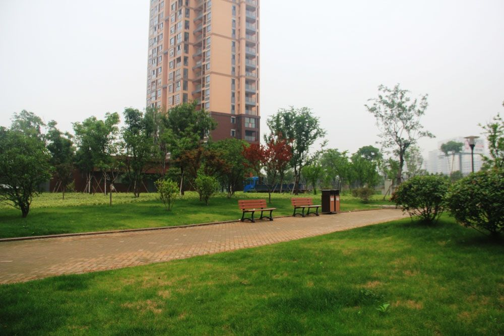
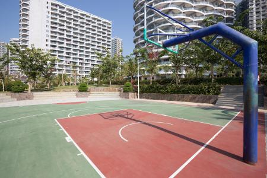
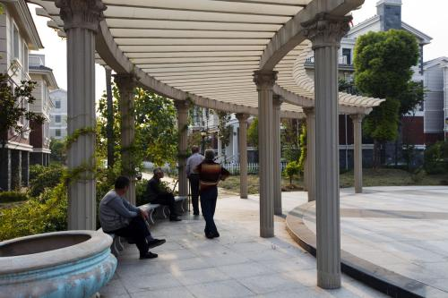
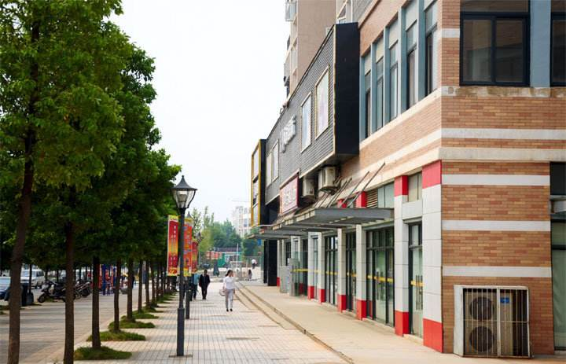
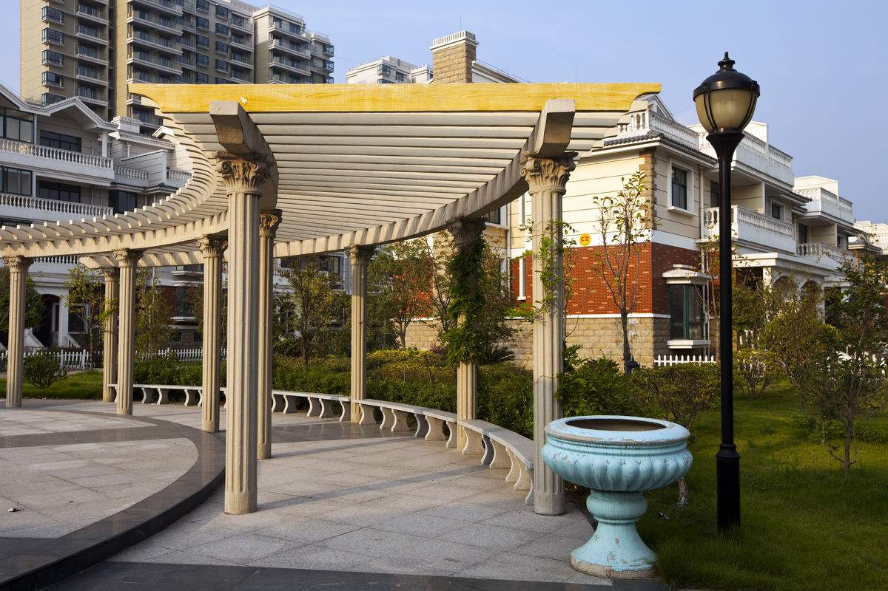
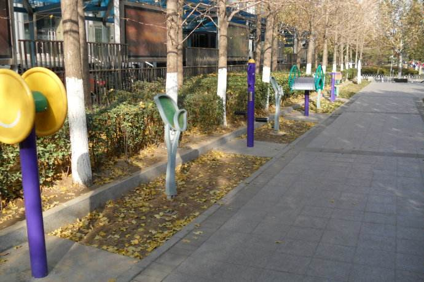

社区简介
社区地址：湖北省武汉市xxx
社区电话：027-82xxx4588
青城小区环境优美、布局合理、功能齐全、舒适方便，是一个集科技、文化和生态于一体，是典型的具有绿色环保特色的高档住宅小区。小区位于石家庄市东郊，紧邻风景区，是河北省唯一一家被命名为“国家康居住宅示范工程”的小区。小区占地面积约为27万平方米，建筑面积约36万平方米，绿化占小区总面积43%，小区内有高层及多层住宅、商铺以及与之配套的幼儿园、小学、菜场公共设施组成。小区现有楼房86栋，住户2564户，常住人口7542人，流动人口182人。
青城社区现有工作人员13名，主要负责整个小区的基层党建、社会保障、计划生育、治安防范等各项工作。自小区2017年9月成立以来，在市、区、街道办的正确领导下，在辖区内有关企事业单位和广大居民的积极支持帮助下，社区立足于自身，本着坚持以人为本，为人民服务的原则，努力为社区居民办好事，办实事。
近年来，社区以“以人为本、服务群众”为宗旨， 创先争优，坚持强化基础、突出特色、开拓创新、注重实效的原则，调动和发挥好社区党员的积极性，积极投身和谐、文明的社区建设，充分发挥社区党组织的政治核心作用，有力地促进了社区发展和稳定。
社区按照履职“三项清单”， 开展了社区党建、精神文明、优抚救济、社会救助、计生服务、文体活动、公共卫生、老龄、残联、志愿服务等工作。工作中，始终在群众“最急”上见真情，在群众“最盼”上赢民心，充分发挥网格员和志愿者的作用，坚持“服务居民零距离”的原则，主动走入居民家中，达到了社区管理到户、到人的目标，为全面开展社区服务工作奠定了良好基础。
下一步，社区将以创建泰安市“先锋社区”“五化五星”基层服务型党组织为目标，坚持“以人为本、服务群众”为宗旨,全面提升社区党建工作和服务群众水平，调动和发挥好社区党员的积极性，积极投身和谐、文明的社区建设中。
